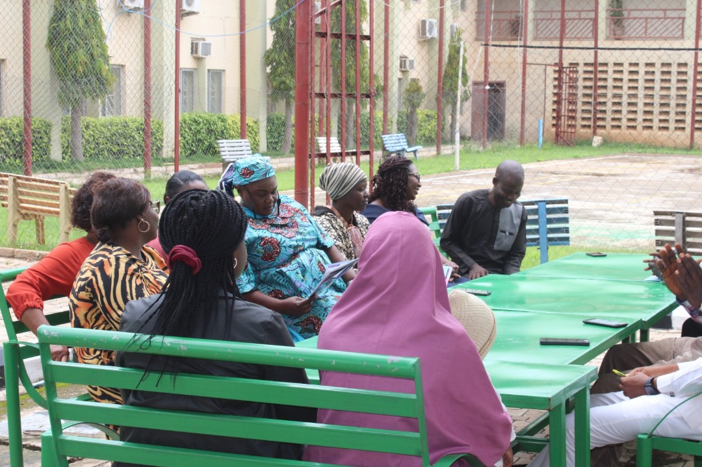
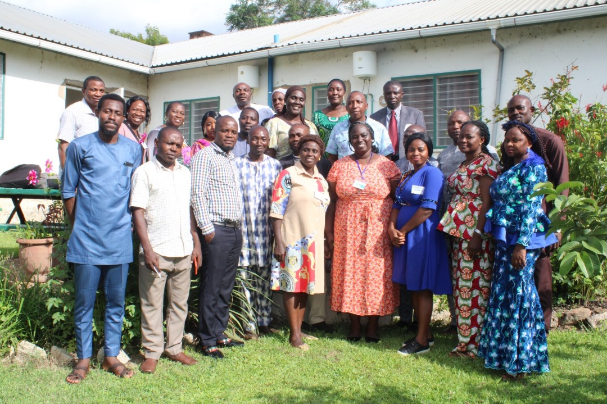
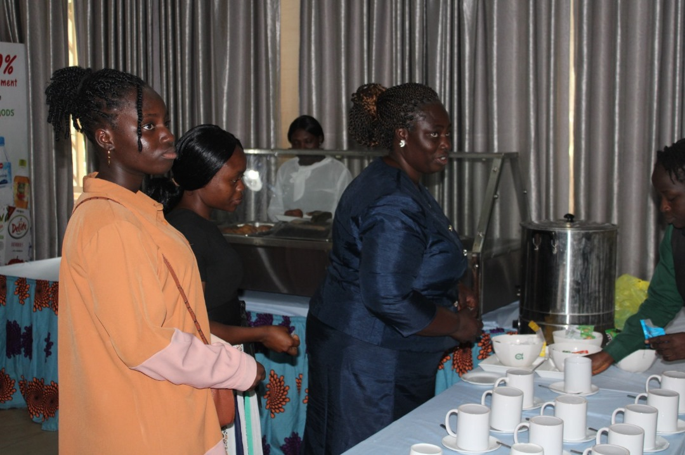
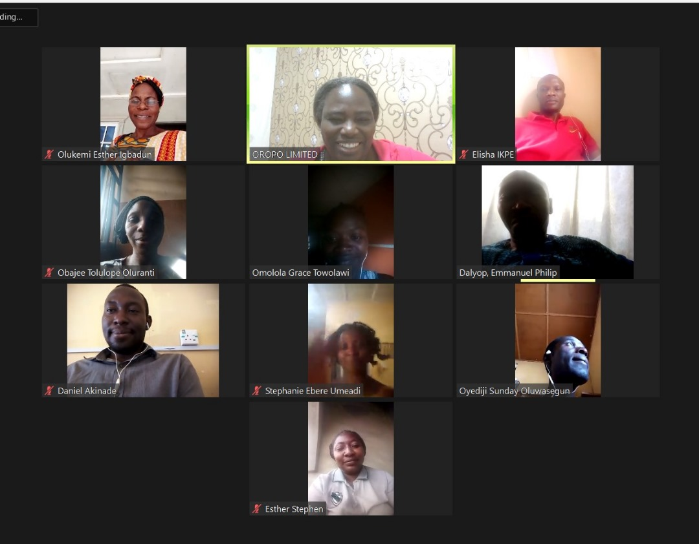
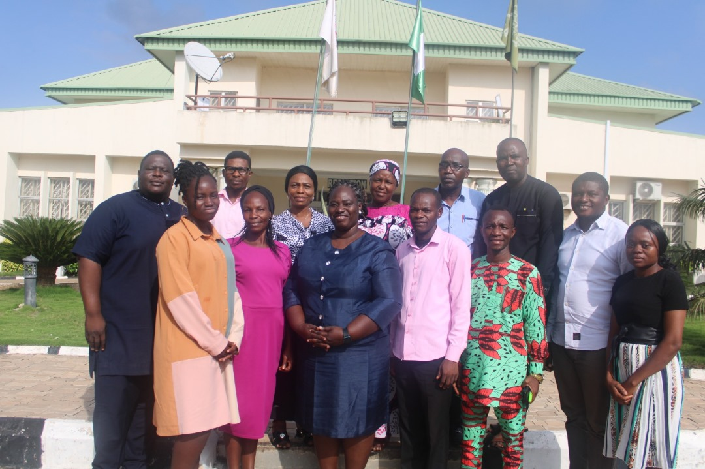
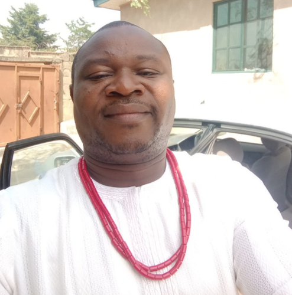
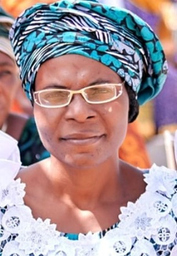
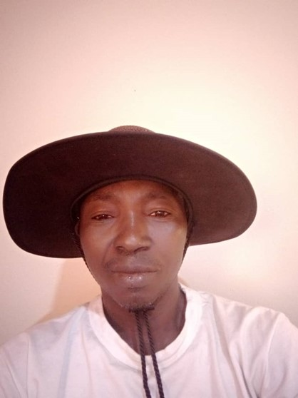

Leadership Coaching
Elevate your leadership potential with our transformative coaching programme, guiding you to inspire, influence, and lead with unwavering confidence and strategic vision.
Leadership, public speaking and educator training from a respected Nigerian coaching firm.

Empowering your growth through expert leadership and dynamic communication training.
Elevate your leadership potential with our transformative coaching programme, guiding you to inspire, influence, and lead with unwavering confidence and strategic vision.
Unlock your full potential with our Skills Development sessions, designed to enhance your professional toolkit, foster adaptability, and propel your career forward through continuous learning and mastery
Craft compelling narratives and master the art of persuasive communication with our Public Speaking Coaching. Develop confidence, captivate your audience, and become a compelling and impactful speaker.
Three programs built for educators, women leaders and creative problem-solvers.
Our educational training is designed to provide teachers with practical skills and knowledge in a specific area of their subject expertise, such as classroom management, time management, emotional intelligence in teaching and mental well-being.The online format allows individuals to learn at their own pace and convenience. We engage cutting – edge practice and technology in implementing the aforementioned strategies.
Learn moreThese coaching classes are designed specifically for women who are looking to enhance their leadership skills and public speaking abilities. The coaching sessions focus on building confidence, developing effective communication skills, and overcoming any challenges that may arise
Learn moreWe support clients in identifying their life needs and put in place best practice and strategies in helping clients get the right creative approach to work and life balance. This programme is designed to help individuals enhance their creativity and innovation skills (ImpactCreator). The coaching sessions focus on developing creative thinking techniques and strategies that can be applied in various areas of life, such as work, business, and personal development.
Learn moreEducators and community leaders pass what they learn to every student and team they lead. Sponsoring one leader reaches many.
Fund a place for a teacher on the TeachTomorrow leadership coaching course. We already offer scholarships to educators, and sponsors help us offer more.
Back a cohort of selected leaders who receive coaching at no cost to them, as part of our corporate social responsibility work.
Commission a tailored programme for your staff or community. Tell us the skills you need and we will build the coaching around them.






The Oropo Leadership Coaching Course is not just another course, but a must do training for anyone who wants to improve his or her leadership role and balance his teaching career, so as to impact meaningfully on his/her students.Personally, I enjoyed most the aspect that exposed me to know that I am a leader, and I am being watched by my students/followers and also the aspect that exposed me to the use of technology in teaching.

Samson Kolawole ADENITANZariaThe coaching course(s) with the Oropo Team so far has been worthwhile. The lessons learnt, the friendly and family-oriented interactions, and the entire experience were real eye openers. The light bulb moment for me was during the part on "Leading yourself" by Dr. Jimoh, when a nugget dropped on my intellect that "Bosses may be born, but Leaders are made". Also, that "Bosses try to show and prove they are in charge, Leaders show you how to be in charge.
 Stephanie Ebere UMEADIKano
Stephanie Ebere UMEADIKanoAttending the Oropo online leadership coaching course, opened up a total, new and wholistic experience for me as a secondary school teacher. I got to learn that to be a good leader and mentor to teenagers and young adults, I needed to know the importance of first knowing how to lead myself. I learnt that leadership should not be seen as a title, but rather a position of influence because a leader always has watchers.
 Fatima Adjua LAWANIJos
Fatima Adjua LAWANIJosIt was awesome and am still using lessons learnt on leading myself by recognizing my leadership traits and my limits , using word catchers correctly since I am being constantly watched. I am more mindful of my words now than ever. I learnt that Mental wellness is key to my being an effective leader. The advice on that is still being followed especially on practicing stress relieving activities like gratitude journal, music and family time out.

Esther Olukemi IGBADUNKadunaI enjoyed the coaching course because it enabled me to benefit from the experiences of others. And the resource persons were drawn from people who are experts in their fields. I enjoyed the interactions most, followed by the part where people are allowed to interpret pictures/photos based on the messages they are getting from the images. I also enjoyed the fact that the contents are centered on the development of the participant first. One cannot give what they don't have.
The quality of instructors, materials, sessions, breaks were all building blocks to what actually seems to be awaiting my new assignment. Before the training, I nearly turned down the new assignment offer. In fact, afterwards, I left that training with zeal & agility and executed a newly founded secondary school for my organization that's now running smoothly to the amazement of the committee and board members.

Emmanuel DALYOPJos